El Plastic Nefastic es un juego de plataformas donde el jugador tendrá que recoger Collectibles (Botellas) y Droppers (Bolsa de basura) para puntuar.
El jugador podrá disparar para matar a los enemigos. Y podrá pasar a la siguiente Nivel si ha matado a todos los enemigos.
Cada nivel tendrá distintos enemigos que se eliminarán de distinta manera.
Tendremos que poner una salida de escape para el siguiente nivel sin que tengamos que matar a los enemigos.
El Jugador tendrá 5 vidas que se eliminarán si los enemigos lo han tocado o si se le ha acabado el tiempo para pasar el nivel.
El Player se moverá con la teclas derecha e izquierda y realizara un salto con la flecha hacia arriba.
También dispara con el espacio.
Es el disparo que realiza el Player con el espacio. Que dependerá hacia donde este mirando el personaje.
Son las botellas que aparecerán en distintas posiciones del escenario. Nos dará puntos cada vez que los recojamos.
La bolsa de basura saldrá de arriba del todo del escenario y caerá siempre delante del Player. Aparecerá de forma aleatoria.
Es una entidad que hara de ascensor vertical para poder acceder a las plataformas de arriba.
Se mueve continuamente de arriba abajo con unos limites.
Es una entidad que hara de plataforma horizontal para que se mueva para sortear entidades...
Se mueve continuamente de derecha a izquierda con unos limites.
Tendremos 3 tipos de enemigos. Cada uno lo pondremos en un nivel diferente.
Seguiran continuamente al Player.
<<<<<<< HEAD
Y al eliminarse en uno parecerán fragmentos que será la misma entidad pero más pequeña, otros aparecera Sangre ó Humo.
=======
Y al eliminarse en uno parecerán fragmentos que será la misma entidad pero más pequeña, otros aparecera blood ó Humo.
>>>>>>> 1d46426774026ec9751540911c0b0de8864dd9c1
Solo tendremos un enemigo que se destruya y salgan estos fragmentos.
Son los fragmentos de los Enemigos que saldrán despedidos cuando sean eliminados.
<<<<<<< HEAD
Solo tendrá un solo sprite.
Cuando se destruya el Enemigo pondremos que aparezca el Humo o la Sangre. ======= Para hacer los fragmentos cogemos cualquier sprite de los enemigos y lo hacemos más pequeño. Solo tendrá un solo sprite. >>>>>>> 1d46426774026ec9751540911c0b0de8864dd9c1
Si colisionamos con un interruptor se pondrá en verde y podremos acceder a una puerta para poder a otro nivel.
Tendrá un atributo de inmortalidad para que no se pueda tocar el interruptor hasta que pase un tiempo.
La puerta se pondrá en verde cuando este activado el interruptor.
Servirá para pausar el juego.
Se podrá apagar o encender los sonidos.
Tenemos varias entidades para poner titulos en las diferentes escenas que tenemos: Enhorabuena, GameOver, Has completado, Titulo Juego.
Tendremos 2 Fondos uno de cerca y otro de lejos y se moverán hacia la izquierda o derecha dependiendo hacia donde se mueva el jugador.
<<<<<<< HEADTenemos 2 tipos de fuentes en Fonts para poder usar. =======
dsfsdfdsfs. >>>>>>> 1d46426774026ec9751540911c0b0de8864dd9c1
Tendremos unos sonidos que estarán en un "Behaviour Sonidos" que crearemos.
Tendremos un set de baldosas para poder dibujar nuestro escenario con plataformas.
Hacemos una Escena que se llame "Nivel1". Tamaño de 640x480 (el que viene por defecto). Aunque luego en propiedades de la Escena aumentaremos
su tamaño en Altura y Anchura para que el Nivel sea más largo.
Añadimos 2 Fondos en Central del juego/Fondos y lo llamaremos Fondo Cerca ("layer-3-first-cactuses.png") y Fondo Lejos
("layer-6-sky.png").
Al Fondo de Cerca le ponemos una Velocidad de desplazamiento horizontal de 15. Y chequeamos el "Repetir fondo".
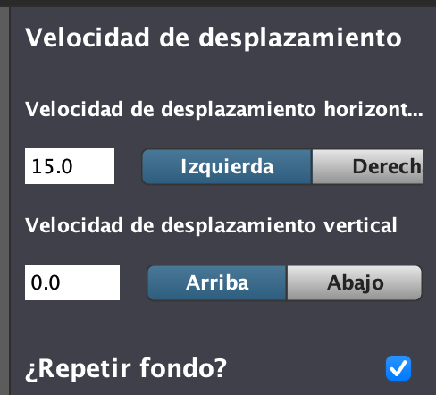
Al Fondo de Cerca le ponemos una Velocidad de desplazamiento horizontal de 20. Y chequeamos el "Repetir fondo".
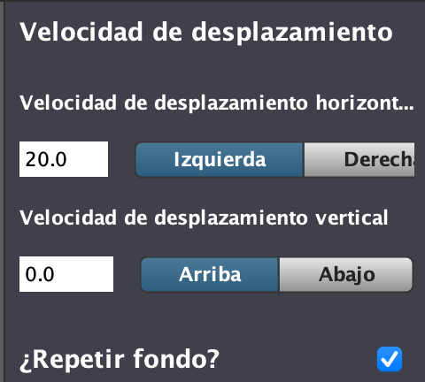
Tenemos que crear dos capas para poder poner los fondos.
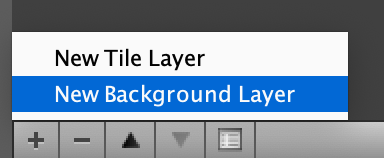
Y las tenemos que poner en este orden para que aparezcan una encima de la otra. Asi los cactus aparecerán encima del Fondo Lejos.
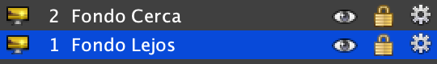
El Escenario tiene una gravedad que la ponemos en la solapa de Fisica.
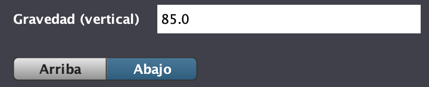
Poner un suelo y el Player.
El Escenario tiene 2 Eventos:
- Created - Play Sound: Manda a un Behaviour Sonidos que suene una música de fondo.
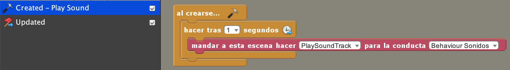
- Updated: Dependiendo la dirección del Player los fondos se moverán al lado contrario.
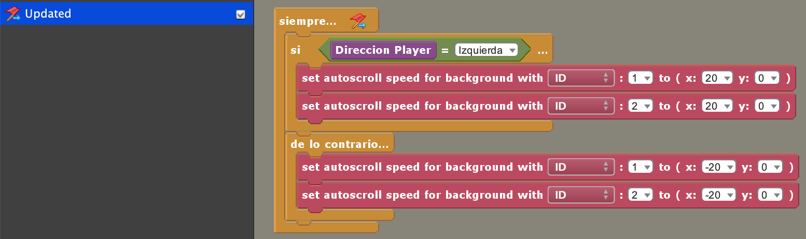
El Escenario tiene también varios Behaviour:
- Behaviour Sonidos
<<<<<<< HEAD
- Contar Actores
- Entra en Region
- Manejar Droppers
- Manejar Puntuaciones
=======
- Contando Actores Nivel1 ????
- Entra en una Region ?????
- Manejar Droppers ?????
- Manejar Puntuaciones ????
>>>>>>> 1d46426774026ec9751540911c0b0de8864dd9c1
Tenemos que crear este Behaviour de tipo Escena y añadiremos en distintos canales los siguientes sonidos.
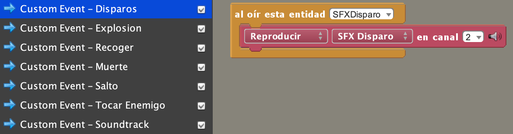
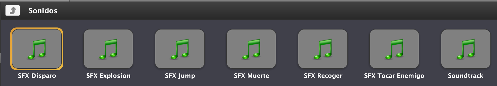
Comenzamos a exportar el Idle del Player1. Bilinear para que se vea con mejor resolución. Escala 4 y exportamos todos los sprites de uno en uno de la carpeta de Actor Types/Player/Player1/Idle/frame-1.png....frame-12.png. Lo llamaremos "Idle Right" y lo pondremos como animación por defecto con la estrella.
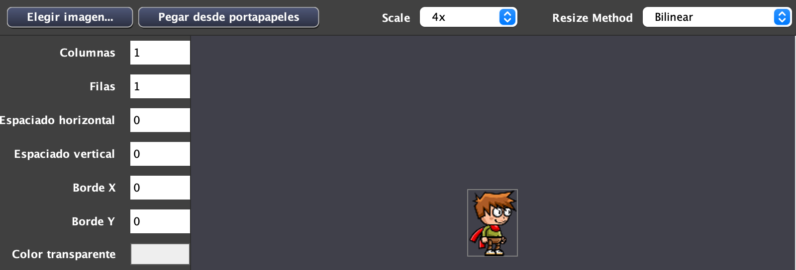
Podemos duplicar esta animación y voltearla horizontalmente y la llamamos "Idle Left".
Creamos otra animación de salta derecha. Bilinear, escala 4 y el sprite de la carpeta de Actor Types/Player/Player1/Jumping/"Jump-right.png". Lo llamaremos "Jump Right". Y haremos lo mismo que la anterior para que sea hacia la izquierda.
Creamos otra animación de correr. Bilinear, escala 4 y exportamos todos los sprites de la carpeta de Actor Types/Player/Player1/Running/frame-1.png....frame-6.png. Lo llamaremos "Run Right". Y haremos lo mismo que la anterior para que sea hacia la izquierda.
Creamos otra animación de herido. Bilinear, escala 4 y exportamos todos los sprites de la carpeta de Actor Types/Player/Player1/Herido/frame-1.png....frame-2.png. Lo llamaremos "Herido".
Tendrá una colisión y una Física:
- Nomal.
- No podrá rotar.
- Y si está afectado por la gravedad.
- El resto de las opciones se quedan como están.
Y pertenecera al Grupo de Colisión de Players.
Los Players colisionarán con:
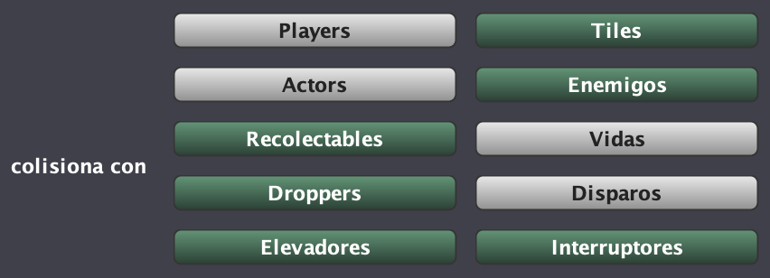
Podemos ver que tenemos más grupos de colisión que iremos añadiendo poco a poco.
El Player tiene un Behaviour para el Movimiento. Dentro de este tendremos 3 Eventos:
- Updated: Vamos a ver otra forma de recoger el movimiento del personaje pero con un número y con un boleano.
Necesitamos 2 atributos "Mover" será númerico, "Saltar" y "Suelo" serán booleanos.
En "Mover" restamos el número de la tecla derecha menos el número de la tecla izquierda y en "Saltar" solo
recogemos si he pulsado la tecla hacia arriba.
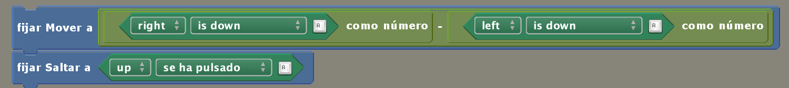
Si el resultado de "Mover" es -1 se moverá hacia la izquierda y si es 1 a la derecha. Le hacemos un presionar con el valor "Mover", una dirección Y a 0 y una fuerza.
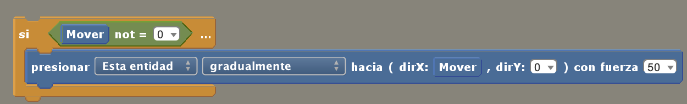
Si saltamos y estamos tocando Suelo (Lo controlaremos en otro evento Actor-Any). Le hacemos un presionar con el valor
"Mover", una dirección Y a -1 (hacia arriba) y una fuerza.
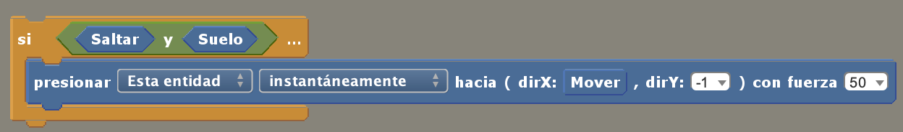
Necesitaria otro atributo boleano "Izquierda" para saber que la dirección y que no sobrepase un número determinado de x-speed y cambiar la animación.
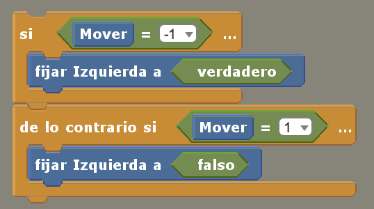
Vamos a controlar que si va el Player a más velocidad no pueda pasar de 15 tanto hacia la derecha como a la izquierda.
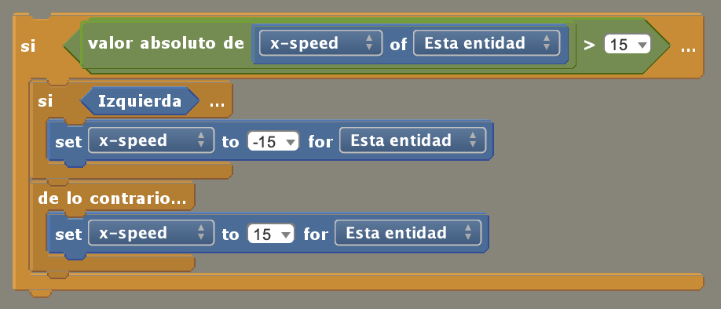
<<<<<<< HEAD ======= < >>>>>>> 1d46426774026ec9751540911c0b0de8864dd9c1 Si estoy saltando compruebo la dirección y cambio la animación a Jump. Y me creo un atributo del Juego "Direccion Player" de tipo Texto.
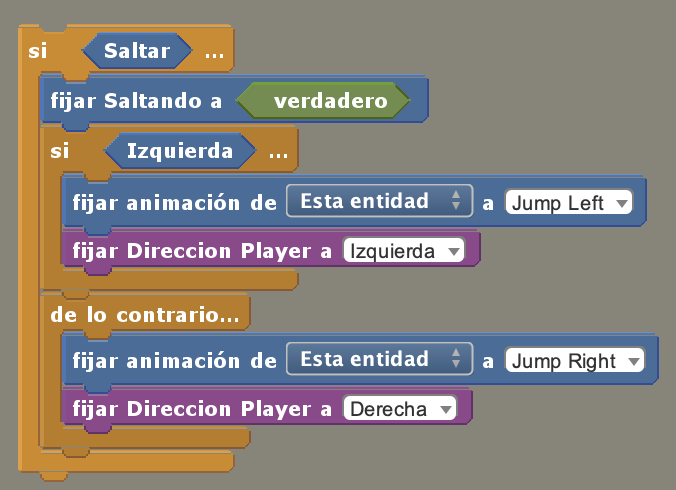
Si el "Mover" no es 0 y "Suelo" es true o sea estoy tocando el suelo cambio la animación a Run y inicializo el atributo "Direccion Player".
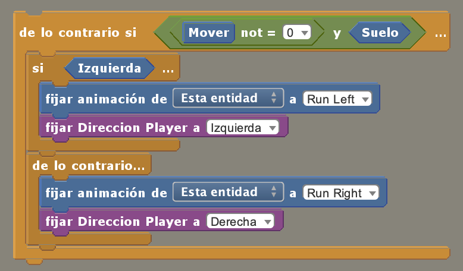
Si no ocurre ninguna de las anteriores y no estoy Saltando pongo la animación de Idle.
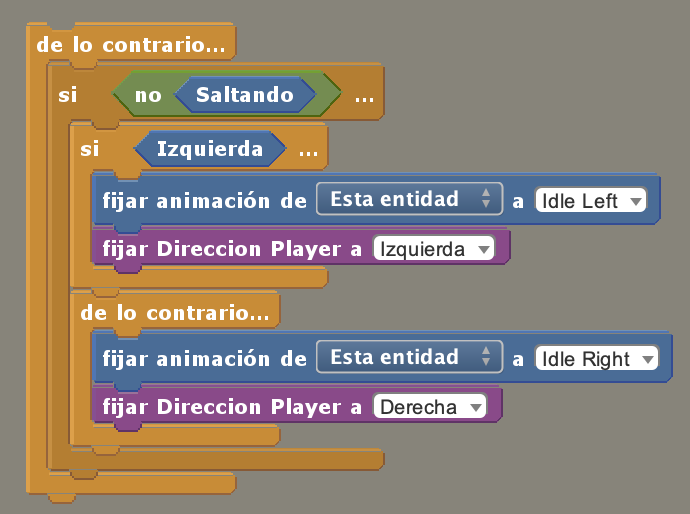
Al final del Updated inicializo las variables. Y recojo continuamente la posición X de nuestro Player para cuando lancemos una basura desde arriba siempre caiga por delante de él.
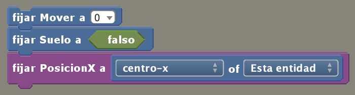
- Created: Inicializamos el atributo "Saltando" a false. Este atributo nos dirá si esta saltando o no el Player para poder cambiar la animción de Idle cuando toque el suelo (Lo veremos más adelante).
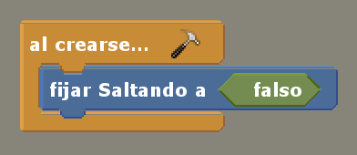
- Actor-Any: Cuando colisiona está entidad con algo y le da por debajo tenemos que poner el atributo "Suelo" a true y si
ha saltado tenemos que volver a cambiar la animación a "Idle". Y "Saltando" se quedará a false.
Este cambio de animación tendremos que esperar 1 segundo para hacerlo para que se vea la animación de saltar.
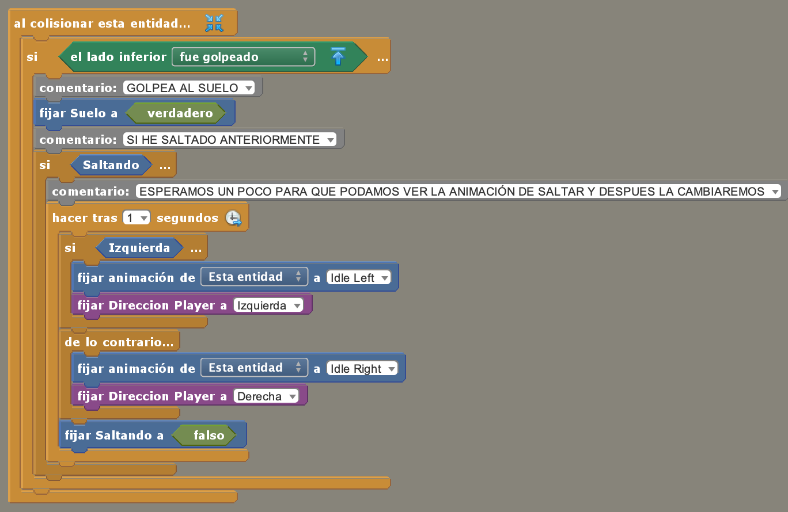
- Keyboard: Si salta sonará el sonido del salto que estará en el Behaviour Sonidos que hicimos anteriormente.
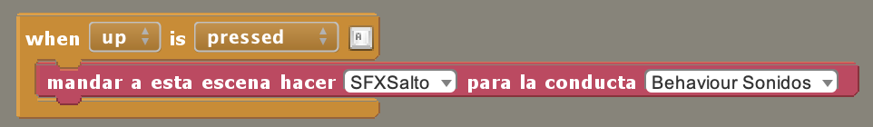
Haremos que nuestro Player dispare. Para ello necesitamos una nueva entidad que se llamará "Disparo".
Creamos una animación, bilinear, escala 4 y lo exportamos de la carpeta de Disparo/Big-Blast-right.png.
Habría que duplicar está animación y voltearla horizontalmente para que mire hacia la izquierda.
Tendrá una colisión y una Física:
- Nomal.
- No podrá rotar.
- No está afectado por la gravedad.
- El resto de las opciones se quedan como están.
Y pertenecera al Grupo de Colisión de Disparos.
El Disparo colisionarán con:
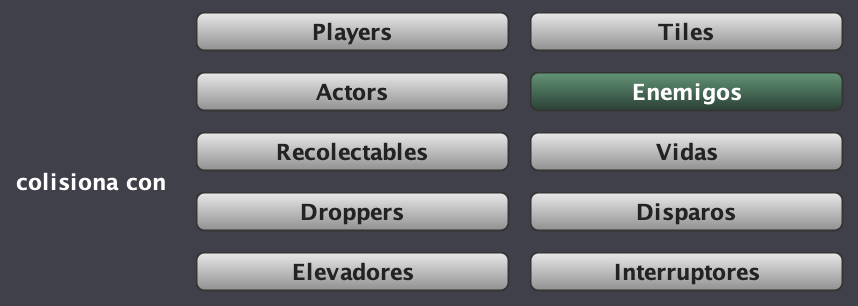
Vamos hacer el Behaviour para que cuando el Disparo se salga de la pantalla se destruya. Lo llamaremos "Behaviour Destruir Salir Pantalla"
Se lo asignamos a esta entidad.
Tendrá 2 Eventos:
- Created: Para que se siga moviendo fuera de la pantalla.
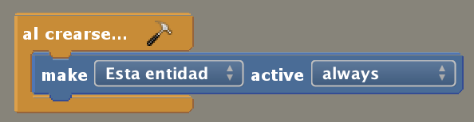
- Enters Screen: Cuando el disparo se salga de la pantalla se destruira.
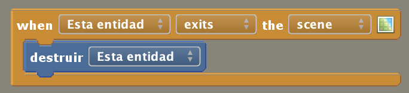
Ahora necesitamos que se dispare la bala asi que necesitamos hacer el Behaviour Crear Disparos. Que lo tendrá asociado el Player en la solapa de Conductas.
Tiene 1 Evento:
- Keyboard: Se dispara con el espacio.
Tenemos que saber a que dirección apunta nuestro Player y para eso ya tenemos un atributo del juego "Direccion Player" que lo
inicializamos en "Behaviuor Movimiento Player".
Pondremos que se oiga el sonido del disparo (Behaviour Sonidos)
Y depende en que dirección este el Player crearemos el disparo a un lado o al otro.
Utilizaremos el presionar con un x-speed.
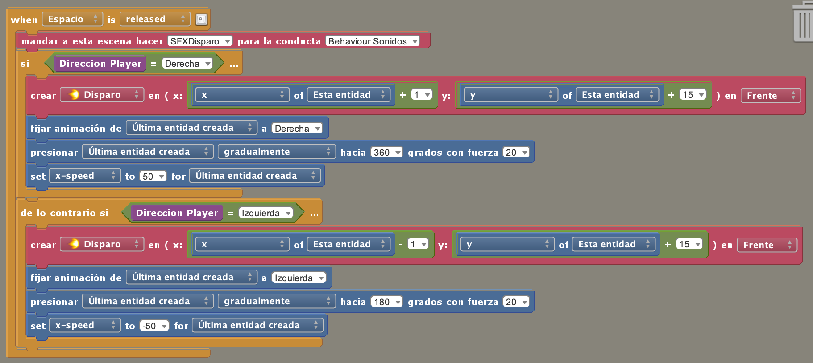
Tendremos que comprobar que el disparo hace alguna colisión. Creamos otro Behaviour Colisiones Player, y se lo asignamos al Player.
Tendremos varios Eventos para poder hacer las distintas colisiones que tenemos:
- Group - Group - Disparo colisiona con Enemigo: Si el grupo de Disparos golpea al grupo de Enemigos sumaremos un atributo
del juego "Puntuacion" se destruye el disparo y el enemigo.
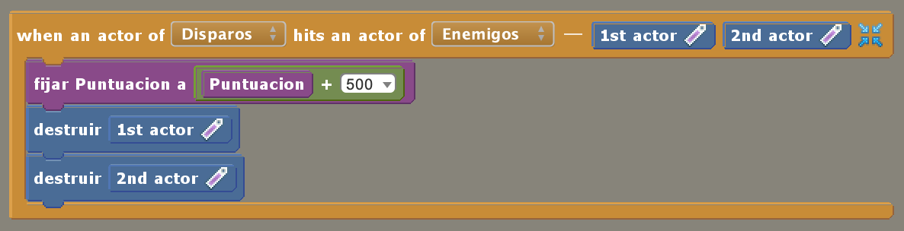
Recordar que los nombres de los Eventos se pueden modificar para identificarlos mejor.
Antes de continuar con el Behaviour Colisiones Player haremos a los Enemigos para poder continuar el juego.
Cogeremos los Sprites de los Enemigos que queramos. Escala 4 y haremos varias animaciones: Idle, Walk(frame-1-left.png....frame-4-left.png),
y got hit (frame-1-left.png y frame-2-left.png). Haremos luego el resto de la animaciones mirando a la derecha volteandolas en horizontal.
Tendrá una colisión y una Física:
- Nomal.
- No podrá rotar.
- Está afectado por la gravedad.
- El resto de las opciones se quedan como están.
Y pertenecera al Grupo de Colisión de Enemigos.
Los Enemigos colisionarán con:
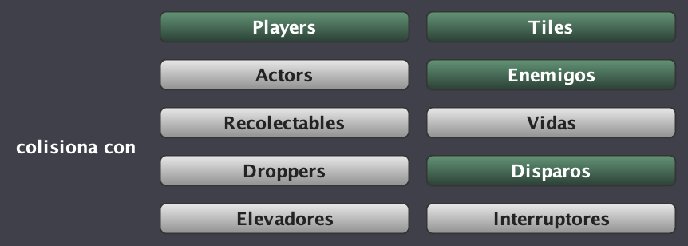
Ahora que ya tenemos el Enemigo creado hacemos la colisión con el Enemigo.
- Actor - Group - Colisiona con Enemigos: Cuando al Player colisiona con el Enemigo se escuchara el sonido de "SFXTocar_Enemigo" que está
en el Behaviour Sonidos.
Quitaremos una vida al Player.
Cambiamos la animación de Herido y luego la volvemos a dejar como estaba.
Y el Player comenzara de nuevo el Nivel.
Si nos quedamos sin vidas se acabara el juego. Sonara el sonido de Muerte y aparece una Escena de "Game Over".
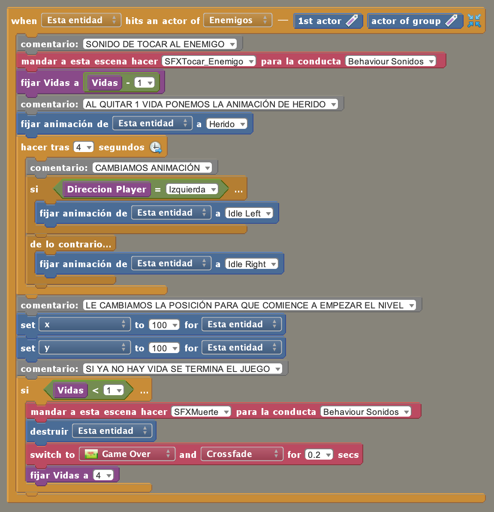
Los Enemigos tendrán 2 Behaviour. Pero los pondremos en la Escena de Nivel 1.
- Explotar Si Muere.
- Seguir al Objetivo
Vamos primero a crear estos behaviour y luego explicaremos como introducirlos en el Nivel 1 en el Enemigo.
Ocurrira cuando la entidad se muere. Asi que necesitaremos un Evento:
- Actor Created: Sumaremos puntuación a un atributo del juego "Puntuacion".
Crearemos dos atributos "Actor Fragmento" y "Actor Explosion" serán de tipo entidad. Y otro "Direction" será númerico para
que salgan despedidos los fragmentos a distintas direcciones.
Cuando se lo asignemos a un enemigo rellenaremos uno u otro tipo de actor. Y asi podemos preguntar si tiene valor o no para
poder hacer una cosa u otra.
Si lo que queremos es que salgan fragmentos hare un repetir un número de veces para que se cree ese fragmento, lo posicionare
en el enemigo y le dare una velocidad y una velocidad angular para que gire.
Pero si lo que quiero es que salga solo la Explosión simplemente la creare en la posición del enemigo.
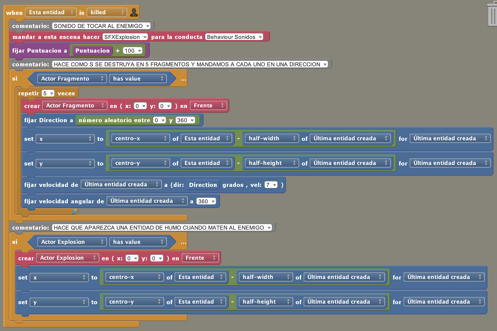
Al crear los atributos se pueden poner que se vean o que no. En nuestro caso pondremos que se vean solo "Actor Fragmento" y "Actor Explosion".
<<<<<<< HEAD
La Explosion Humo está en:
- Actor Types/Explosion Enemigos/ hay 2 tipos de Humo Explosion ó Explosion Suelo poner el que querais.
- Escala 4.
- Su Bucle estará desactivado.
La Explosion Sangre está en:
- Actor Types/Explosion Enemigos/Sangre.png.
- Escala 1 y Columna y Fila 4.
- Su Bucle estará activado.
Ninguna de las dos tiene colisión y en Física No se puede mover.
Pertenecen al grupo de colisión de Actors.
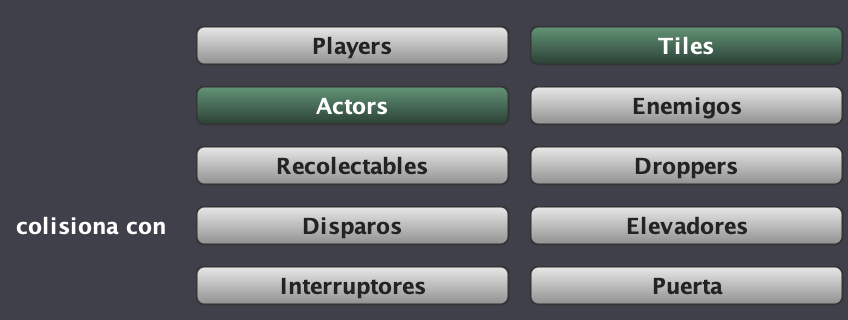
Y tendrán un Evento cada una:
- Created: Para que se oiga el Sonido de Explosión.
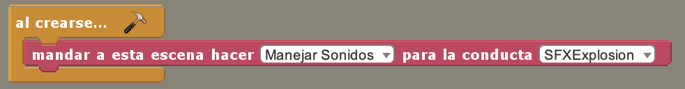
Este behaviuor estará siguiendo continuamente a nuestro Player. =======
Este evento estará siguiendo continuamente a nuestro Player.
>>>>>>> 1d46426774026ec9751540911c0b0de8864dd9c1
Se necesitarán varios atributos:
- "PosicionActorX" para saber la posición X que tiene el Player. Será númerico.
- "ActorASeguir" es el actor al que perseguimos. Será una entidad.
- "AnimacionDerecha" y "AnimacionIzquierda" para saber que animación hay que poner dependiendo donde este el Player. Será de tipo
Animación.
Necesitaremos 2 Eventos:
- Evento Created: Para inicializar la posición del Player y la animación de los enemigos dependiendo donde se encuentre nuestro Player.

- Evento Update: Para actualizar la posición del Player y la animación de los enemigos. Y también haremos que el Enemigo se mueva dependiendo hacia que dirección este el Player comprobandolo con la X.
<<<<<<< HEAD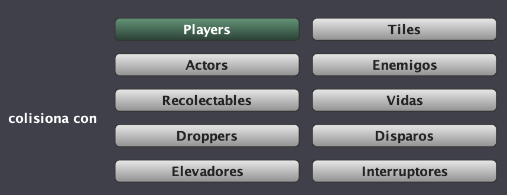
Necesitamos hacer los Fragmentos para que al destruir aparezcan. Escala 4 y los sprite están en Actor Types/Enemigos/Monster C/idle/frame-fragmento.png.
No tiene colisión y si tiene Física:
- Nomal.
- Si podrá rotar.
- No está afectado por la gravedad.
- El resto de las opciones se quedan como están.
Y pertenecera al Grupo de Colisión de Actors.
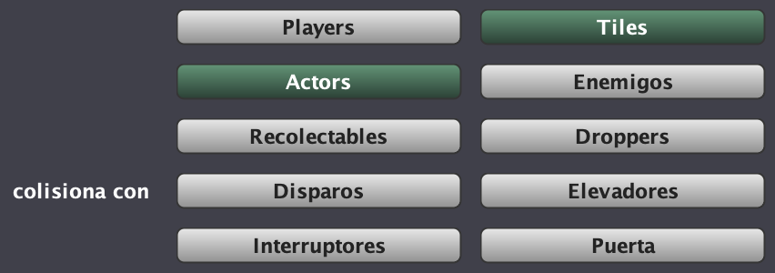
Este behaviour estará en los fragmentos de los enemigos. Y lo que hara es que se desvanezcan poco a poco y se destruya
la entidad.
Necesitaremos 2 Eventos:
- Created: Al cabo de 2 segundos haremos una llamada a un "Custom Event" que se llamara "Desaparecer".

- Advanced/Custom Event Desaparecer: Al oir ese mensaje que llamamos hacemos que se desvanezca y se destruya al cabo de un tiempo.
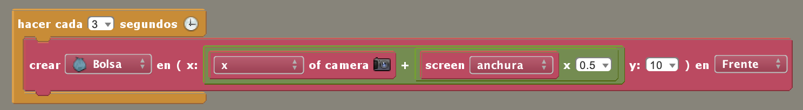
======= >>>>>>> 1d46426774026ec9751540911c0b0de8864dd9c1
Ahora explicaremos como introducimos estos Behaviour "Explotar Si Muere" y "Seguir al Objetivo" en el Enemigo.
Vamos a nuestro Nivel 1, ponemos al Enemigo y lo seleccionamos.
En la parte de la derecha aparecen unas solapas Paleta e Inspector. Seleccionamos a nuestro Enemigo y en Inspector nos aparecera
sus propiedades.
Y hay un check que pone "Customize". Ahi añadiremos nuestros behaviour dandole al "+" y rellenaremos los parámetros que nos interesen.
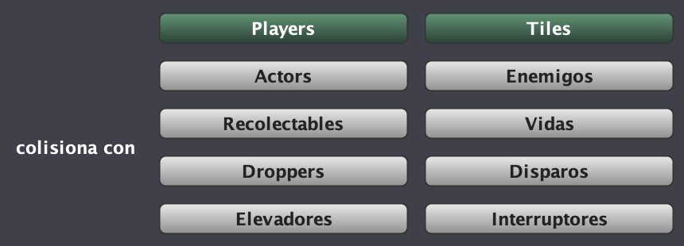
=======
Cuidado al poner los Behaviour ó se ponen en la Escena como hemos explicado o se ponen en la Entidad. Manda siempre el que tenga en la Escena.
Y cuidado en tener chequeado en la escena que tenemos un Behaviour pero en realidad no halla ningún Behaviour y NO funcionara el que tengamos
en la entidad.
Añadiremos las Botellas en entidades distintas para poder continuar con el "Behaviour Colisiones Player"
Los Sprites los encontraremos en Actor Types/Collectibles con una Escala de 1.5. Hay 7 Botellas.
Tendrá una colisión (Checkear sensor para que se pueda atravesar) y una Física:
- No se puede mover.
- El resto de las opciones se quedan como están.
Y pertenecera al Grupo de Colisión de Recolectables.
Los Recolectables colisionarán con:
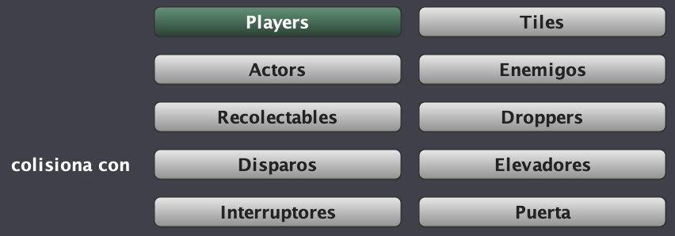
Ahora que ya tenemos a los Recolectables creados hacemos la colisión con el Player.
- Actor - Group - Colisiona con Recolectales: Creamos un atributo "Desvanecer" a verdadero para que le de tiempo hacer el código.
Este atributo se crea en este Behaviour y será oculto.
=======
Ahora que ya tenemos a los Recolectables creados hacemos la colisión con el Enemigo.
- Actor - Group - Colisiona con Recolectales: Creamos un atributo "Desvanecer" a verdadero para que le de tiempo hacer el código.
>>>>>>> 1d46426774026ec9751540911c0b0de8864dd9c1
Ponemos el atributo a falso para que no este continuamente metiendose y que no se oigan lo sonidos nada más que una vez.
Cuando al Player colisiona con la Botella se escuchara el sonido de "SFXRecoger" que está en el Behaviour Sonidos.
Sumaremos menos puntuación que con los Enemigos en el atributo del juego "Puntuacion".
Haremos un efecto de desvanecer.
Esperamos un poco lo destruimos y volvemos a dejar "Desvanecer" a verdadero.
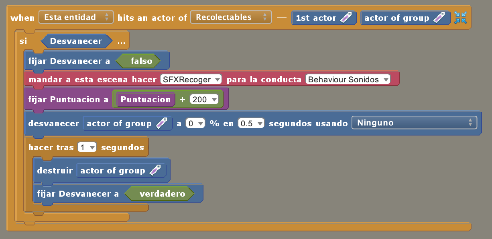
======= >>>>>>> 1d46426774026ec9751540911c0b0de8864dd9c1
La entidad Bolsa esta en Actor Types/Droppers. Escala 1.
Tendrá una colisión y una Física:
- Normal.
- No puede rotar.
- Si está afectado por la gravedad.
- El resto de las opciones se quedan como están.
Y pertenecera al Grupo de Colisión de Recolectables.
Tendrá 1 Evento:
- After N secs: Al cabo de 2 segundos la basura se destruira.
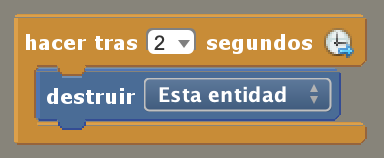
=======
Tenemos que hacer el movimiento de la basura. Para ello necesitaremos un nuevo Behaviour "Manejar Droppers".
<<<<<<< HEAD
Estará en el Escenario Nivel 1.
=======
Estará em el Escenario Nivel 1.
>>>>>>> 1d46426774026ec9751540911c0b0de8864dd9c1
Es un Behaviour de Escena.
<<<<<<< HEAD
- Every N secs: Cada cierto tiempo crearemos un Dropper. Siempre por delante del Player
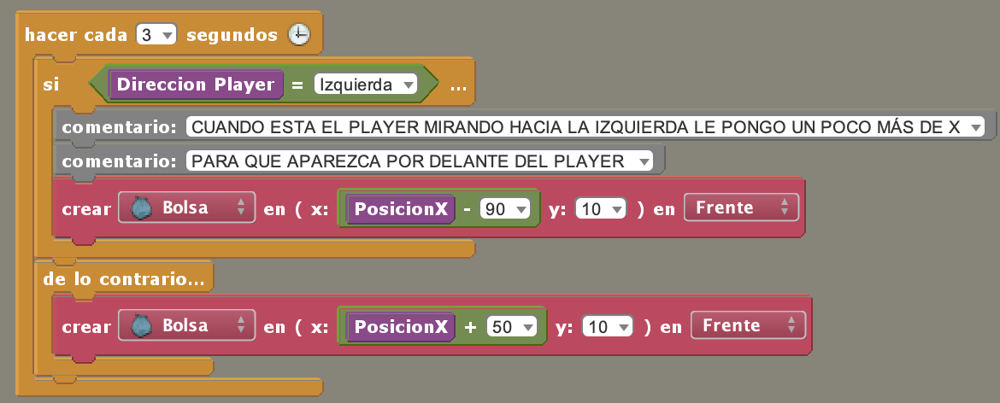
La entidad Interruptor esta en Actor Types/Interruptores. Escala 1. Tendrá dos animaciones una interruptor.png en rojo( animación defecto)
y otra verde interruptor-verde. La roja será un sensor para poder atravesarla.
=======
- Every N secs: Cada cierto tiempo crearemos un Dropper. (Comprobar que siempre este por delante del Plauuyer?????)
????????
La entidad Interruptor esta en Actor Types/Interruptores. Escala 1. Tendrá dos animaciones una roja( animación defecto)
y otra verde. La roja será un sensor para poder atravesarla.
>>>>>>> 1d46426774026ec9751540911c0b0de8864dd9c1
Tendrá una colisión y una Física:
- No se puede mover.
- El resto de las opciones se quedan como están.
Y pertenecera al Grupo de Colisión de Interruptores.
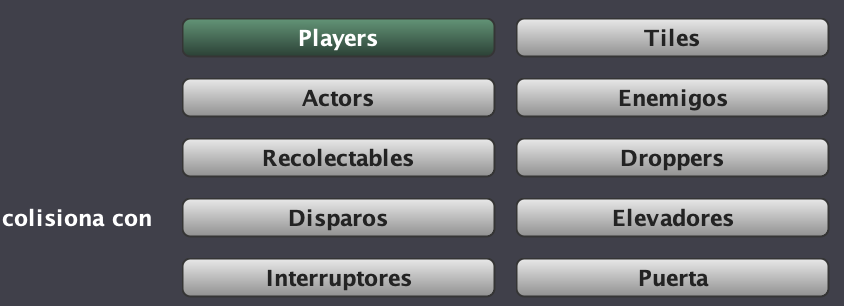
El Interruptor tiene 1 Evento.
- Update: Creamos un atributo del juego "Interruptor" sea 1 cambiamos la animación a Interruptor a ON.
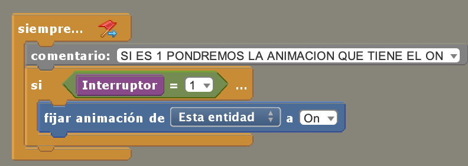
Ahora que ya tenemos el Interruptor creado hacemos la colisión con el Player.
- Actor - Group - Colisiona Interruptor: Si el Player lo toca pondremos el atributo "Interruptor" a 1.
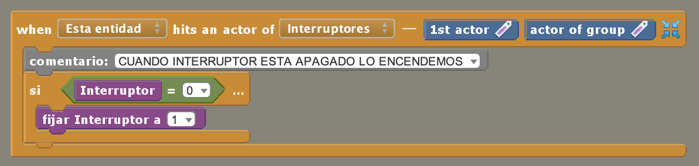
Cuando el Interruptor este encendido abriremos la puerta y la pondremos en verde y cuando lo toquemos pasaremos al siguiente nivel.
La entidad Puerta esta en Actor Types/Interruptores. Escala 1. Tendrá dos animaciones una closed.png(animación defecto en rojo)
y otra verde open.png. Ambos serán un sensor para poder atravesarlas.
Tendrá una colisión y una Física:
- No se puede mover.
- El resto de las opciones se quedan como están.
Y pertenecera al Grupo de Colisión de Puerta.
La Puerta tiene 1 Evento.
- Update: Creamos un atributo del juego "Entra Region" será False por defecto.
Cuando toquemos el Interruptor cambiaremos la animación de la Puerta a verde y ya podriamos entrar en la Región.
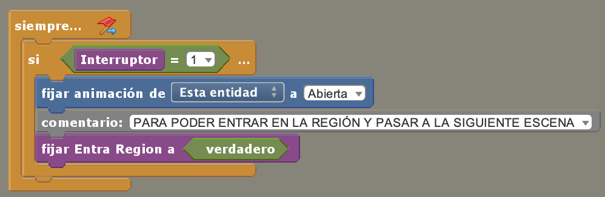
Necesitamos hacer otro comportamiento para saber si hemos entrado en la región para poder pasar al siguiente nivel.
Para ello se tiene que activar la Puerta y debe de estár con la animación en verde.
Tiene que estar a verdadero el atributo del juego "Entra Region" que hicimos anteriormente.
Necesitamos varios parametros:
- Actor es el Player.
- Region es la region que vamos atravesar.
- Siguiente Escena es la escena a la que vamos a pasar.
No estará "Ocultas" para poder incluirlas en el Behaviour.
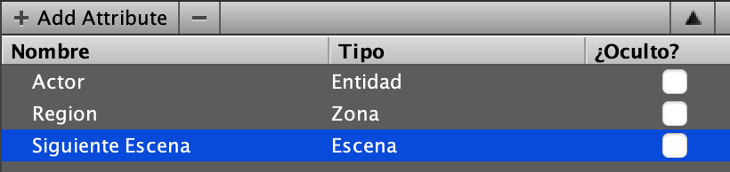
Tenemos que incluir este Behaviour al Nivel y rellenar los atributos que creamos.
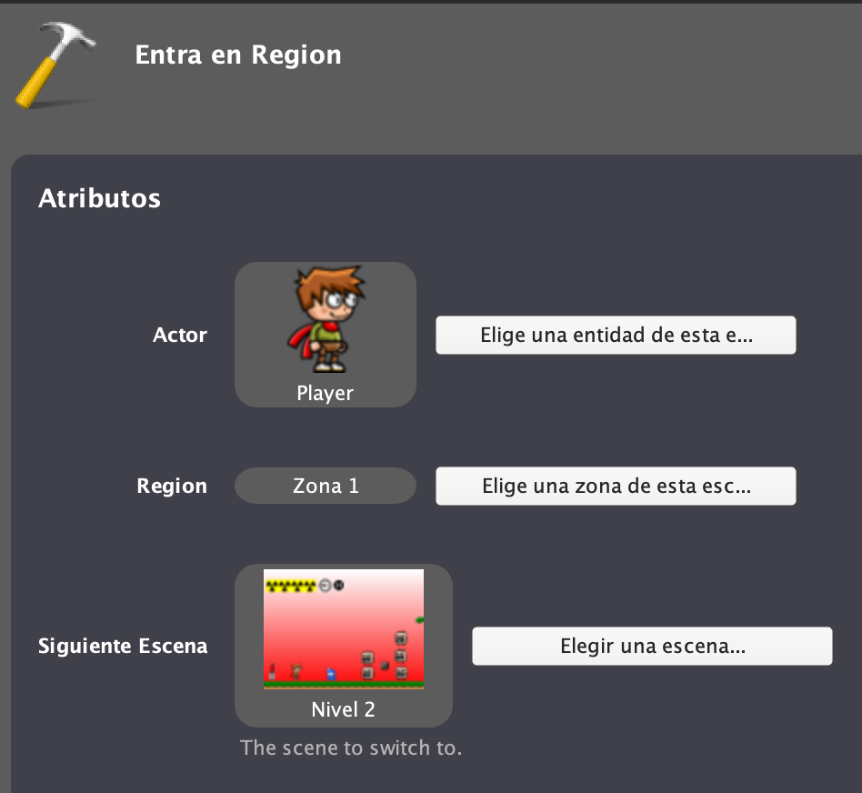
Tiene 1 Evento:
- Update: Si atributo del Juego "Entra Region" esta a verdadero hara unas comprobaciones de si los parámetros tienen valores.
Y si el Actor esta dentro hara la llamada al siguiente Nivel.
Tenemos que hacer estas 3 comprobaciones.
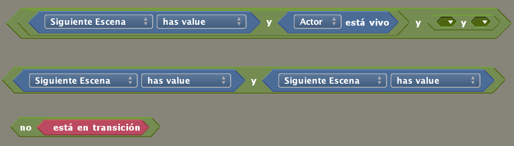
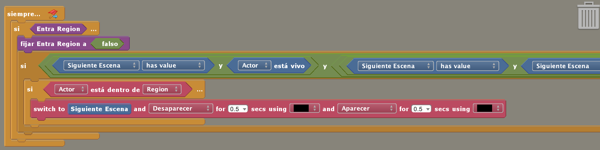
Nos faltaria hacer este Behaviour para el Player para que no se salga de la Escena en ningún momento.
Tiene 2 Eventos:
- Created: para que siempre este activo en la escena o fuera de ella.

- Updating: Controlamos las posiciones de X/Y para que no se salga y tambien sus posiciones con el ancho/alto de la escena.
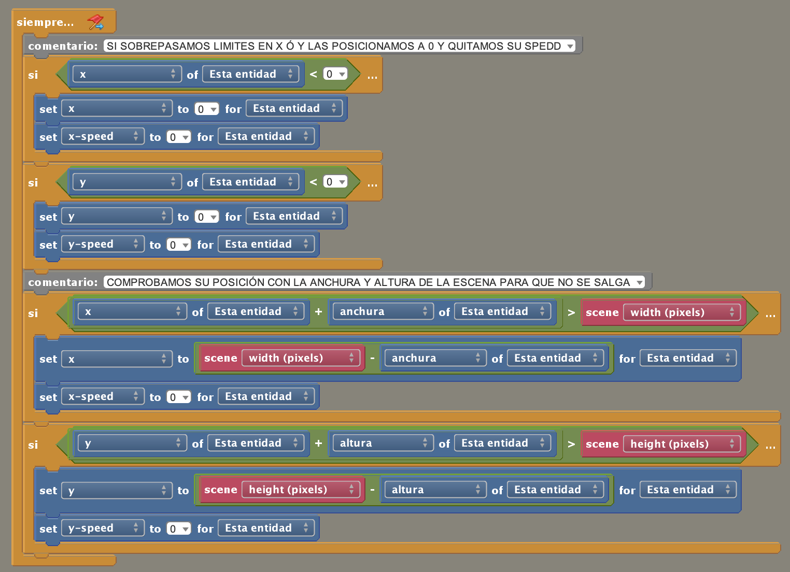
El Player tendrá estos Behaviour.
Y tendrá 1 Evento:
- Updated: Para que la camará le siga constantemente.
La entidad Elevador Vertical esta en Actor Types/Elevators/ascensor.png. Escala 1.
Tendrá una colisión y una Física:
- No se puede empujar.
- El resto de las opciones se quedan como están.
Y pertenecerá al Grupo de Colisión de Elevadores.
Los Elevadores colisionarán con:
La entidad Elevador Vertical tiene un Behaviour asociado de tipo entidad "Movimiento Vertical".
Tiene varios atributos del juego:
- Actor viene por defecto.
- Empiece numerico y está oculto.
- Final númerico y está oculto.
- Maximo Arriba númerico y esta visible para poder rellenarlo cuando lo incluyamos a la entidad.
- Maximo Abajo númerico y esta visible para poder rellenarlo cuando lo incluyamos a la entidad.
Tiene 3 Eventos:
- Created: Siempre estará activo. Y le inicializamos los atributos "Empiece" y "Final". Y le damos una velocidad.5
- Updated: Si la posición Y es Mayor o Menor a los valores iniciales del Created le damos la dirección contraria.
- Actor Any: Si el lado inferior es golpeado hacemos que vaya al contrario. Por si se ha chocado con lo que sea.
La entidad Plataforma Horizontal es muy parecida a la Vertical
Tendrá una colisión y una Física la misma que en la Vertical.
Y pertenecerá al Grupo de Colisión de Elevadores.
La entidad Plataforma Horizontal tiene un Behaviour asociado de tipo entidad "Movimiento Horizontal".
Tiene varios atributos del juego:
- Actor viene por defecto.
- Empiece numerico y está oculto.
- Final númerico y está oculto.
- Maximo Dcha númerico y esta visible para poder rellenarlo cuando lo incluyamos a la entidad.
- Maximo Izqda númerico y esta visible para poder rellenarlo cuando lo incluyamos a la entidad.
Tiene 3 Eventos:
- Created: Igual que la Vertical pero cambiando a la X.
- Updated: Igual que la Vertical pero cambiando a la X.
- Actor Any: Comprobariamos el lado izquierdo y derecha para ir en sentido contrario.
Nos faltaria un Evento en este Behaviour.
- Actor - Type: Si se golpea con la Plataforma Horizontal por el lado inferior, le ponemos la X de la Plataforma al Player.
Para que el Player este siempre en su misma posición.
Es un Behaviour de tipo Escena y nos servira´para todos los Niveles.
Necesitamos incluir la Fuente que está en Fonts/pixelmix_bold.tff. Y la ponemos de color naranja.
Y necesitamos 3 atributos:
Este Behaviour tiene 2 Eventos:
- Drawing: Le cambiamos la fuente a la nueva que hemos incluido y ponemos los Enemigos que nos quedan con el atributo "Numero".
- Update: Comprobamos si tenemos enemigos y si ya no tengo cambiaremos a la siguiente Escena.
Si estoy en el Nivel 3 cambiara a la Escena de Enhorabuena. Con un botón para volver a empezar el juego.
Es un Behaviour de tipo Escena y nos servirá para todos los Niveles. Y nos ira sumando la puntuación y el tiempo que tengo
para terminar el Nivel.
Necesitamos 1 atributos:
Este Behaviour tiene 4 Eventos:
Created: Inicializar el atributo "CuentaAtras" a 30.
- Drawing/Dibujar Puntuacion: Le cambiamos la fuente a la nueva que hemos incluido y ponemos los Puntos.
- Every N secs: Cada 1 segundo descrementamos el atributo "Cuentaatras". Si la "Cuentaatras" es 0 quitamos 1 vida al Player. Y si ya no tiene vidas sonido de muerte y escena de "Game Over".
- Drawing/Cuenta Atras: Pondremos un grosor del contorno, el color y el color del marco y hacemos un rectángulo, Rellenando width con Cuentaatras * 10.
Hay que añadir la entidad de Vidas. Añadir los Sprites que estarán en Actor Types/Vidas/vidas4.png.....vidas0.png. Escala 1.
No tiene colisión y en Física:
- No se puede mover.
- El resto de las opciones se quedan como están.
Y pertenecera al Grupo de Colisión de Doodads (que es un grupo que viene por defecto que no colisiona con nada).
Tiene 2 Eventos:
- Created: La dejaremos anclada a la escena para que siempre se vea.
- Update: Tenemos que cambiar la animación dependiendo del atributo del juego "Vidas".
Tiene 2 Sprites Graficos/No Pausado.png y Pausado.png. Escala 4.
No tiene colisión y en Física:
- No se puede mover.
- El resto de las opciones se quedan como están.
Y pertenecera al Grupo de Colisión de Doodads (que es un grupo que viene por defecto que no colisiona con nada).
Tiene 1 Evento:
- Created: La dejaremos anclada a la escena para que siempre se vea.
Dentro del Nivel está entidad tendrá un Behaviour "Boton Pausar".
Tiene 4 Eventos:
- Created: Creamos un atributo del juego "Pausado" y lo inicializaremos a falso. Para saber que animación tenemos que mostrar.
- Input/On Actor: Si no esta Pausado ponemos la animación de pausar y pausamos el juego. Y sino ponemos la animación de No Pausar y reanudamos el juego.
- Input/On Actor: Si el ratón entra en la entidad ponemos un efecto de negativo.
- Input/On Actor: Si el ratón sale de la entidad quitamos el efecto.
Para hacer que las entidades se pausen tenemos que meternos en cada entidad en Físisca/Advanced y chequear que pueda ser pausado.
Tenemos que modificar un poco los Eventos del Nivel. Ya que tenemos que pausar también el movimiento de los fondos.
Tiene 2 Sprites Graficos/mutte-on.jpg y mutte-off.jpg. Escala 4.
No tiene colisión y en Física:
- No se puede mover.
- El resto de las opciones se quedan como están.
Y pertenecera al Grupo de Colisión de Doodads (que es un grupo que viene por defecto que no colisiona con nada).
Tiene 1 Evento:
- Created: La dejaremos anclada a la escena para que siempre se vea.
Dentro del Nivel está entidad tendrá un Behaviour "Boton Quitar Sonido".
Tiene 2 Eventos:
- Created: Creamos un atributo del juego "Sonido" y lo inicializaremos a falso. Para saber que animación tenemos que mostrar.
- Input/On Actor: Si tiene sonido se lo quitamos y sino lo tiene se lo ponemos.
======= >>>>>>> 1d46426774026ec9751540911c0b0de8864dd9c1